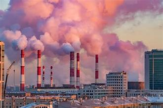
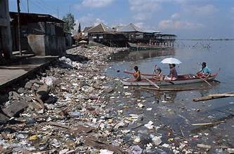

About Us
We are passionate about creating a greener planet through the principles of recycling, reusing, and rethinking waste management practices. Our mission is to inspire and empower individuals, businesses, and communities to adopt sustainable habits that reduce their environmental footprint.
Our Mission
To lead the movement toward a sustainable future by promoting efficient waste management and environmental conservation.
Core Values
Innovation
We continuously explore innovative solutions to make waste management smarter, cleaner, and more effective.
Collaboration
We believe in working together with communities, organizations, and governments to tackle waste issues globally.
Responsibility
We take responsibility for the planet's well-being by promoting practices that ensure a sustainable future for all.
Title: Recycle, Reuse, Rethink: A Global Approach to Sustainability
Introduction-
In today’s world, environmental destruction and the overconsumption of natural resources have led to a pressing need for sustainable practices. The slogan “Recycle, Reuse, Rethink” speaks best how best to cope with environmental problems that this world is facing by ourplanet. This project explores the importance of these three principles and highlights global initiatives, innovations, and news trends that aim to reduce waste, conserve resources, and shift our mindset towards more sustainable practices. As we confront challenges such as climate change, plastic pollution, and resource depletion, these principles offer practical solutions that can be adopted on individual, corporate, and governmental levels. The following sections will delver into the latest global developments, highlight innovative recycling and reusing technologies, and discuss the importance of rethinking the way we approach consumption.
The Global Crisis of Waste and Pollution
The world’s waste problem has reached alarming levels, with over 2 billion tons of waste generated globally each year, according to the World Bank. Of this, 38% is managed through recycling, while the rest ends up in landfills or is incinerated, contributing to greenhouse gas emissions and environmental pollution.
POLLUTION
Pollution is the introduction of harmful materials into the environment. The three major types of pollution are air pollution, water pollution, and land pollution.AIR POLLUTION
 Air pollution is contamination of the indoor or outdoor environment by any chemical, physical or biological agent that modifies the natural characteristics of the atmosphere. Household combustion devices, motor vehicles, industrial facilities and forest fires are common sources of air pollution. Pollutants of major public health concern include particulate matter, carbon monoxide, ozone, nitrogen dioxide and sulfur dioxide. Outdoor and indoor air pollution cause respiratory and other diseases and are important sources of morbidity and mortality. WHO data show that almost all of the global population (99%) breathe air that exceeds WHO guideline limits and contains high levels of pollutants, with low- and middle-income countries suffering from the highest exposures..WATER POLLUTION
 Water pollution is the contamination of water bodies, with a negative impact on their uses. It is usually a result of human activities. Water bodies include lakes, rivers, oceans, aquifers, reservoirs and groundwater. Factories discharge toxic chemicals, heavy metals, and other waste products into nearby rivers, lakes, and oceans. Common pollutants include lead, mercury, and other hazardous chemicals that harm aquatic life and contaminate drinking water sources .Farming activities introduce pesticides, herbicides, and fertilizers into the water supply through runoff, especially after rainfall. This can lead to nutrient pollution, which causes algal blooms, depletes oxygen levels, and harms fish and other aquatic organisms.Everyday household activities, like washing dishes, bathing, and laundry, release soaps, detergents, and other chemicals into the water system. Improperly treated wastewater can carry pathogens, pharmaceuticals, and other contaminants into rivers and lakes.Plastic bags, bottles, and other forms of plastic waste end up in oceans, rivers, and lakes, where they break down into microplastics that are ingested by marine life and eventually enter the human food chainSOIL POLLUTION
 Humans contribute to soil pollution in various ways, primarily through industrial, agricultural, and
urban activities. One major source is the excessive use of chemical fertilizers and pesticides in
agriculture, which introduces harmful substances like nitrogen, phosphorus, and synthetic chemicals that
can disrupt soil health, reduce biodiversity, and contaminate groundwater. Industrial waste, including
heavy metals, toxic chemicals, and byproducts from factories, often ends up in soil through improper
disposal or accidental spills, making it difficult for plants and microorganisms to thrive.
Additionally, landfills and improper waste disposal practices release pollutants like plastics, metals,
and hazardous materials into the soil, leading to long-lasting contamination. Construction and urban
expansion also contribute to soil pollution, as excavated or disturbed soil can release pollutants, and
construction materials often contain chemicals that leach into surrounding areas
Humans contribute to soil pollution in various ways, primarily through industrial, agricultural, and
urban activities. One major source is the excessive use of chemical fertilizers and pesticides in
agriculture, which introduces harmful substances like nitrogen, phosphorus, and synthetic chemicals that
can disrupt soil health, reduce biodiversity, and contaminate groundwater. Industrial waste, including
heavy metals, toxic chemicals, and byproducts from factories, often ends up in soil through improper
disposal or accidental spills, making it difficult for plants and microorganisms to thrive.
Additionally, landfills and improper waste disposal practices release pollutants like plastics, metals,
and hazardous materials into the soil, leading to long-lasting contamination. Construction and urban
expansion also contribute to soil pollution, as excavated or disturbed soil can release pollutants, and
construction materials often contain chemicals that leach into surrounding areas MEASURES TAKEN BY THE GOVERNMENT TO PREVENT POLLUTION
These are the measures given by government to prevent excess air pollution : Air (Prevention and Control of Pollution) Act, 1981 was enacted by the Indian Parliament to provide for the prevention, control, and abatement of air pollution. The Act aims to protect and improve the quality of air and to prevent and control air pollution in India. Some of the key features of the Act include the establishment of State Pollution Control Boards, the regulation of industries and vehicles, and the imposition of penalties for non-compliance with the provisions of the Act.
PREVENT WATER POLLUTION
Water (Prevention and Control of Pollution) Act 1974 : Water (Prevention and Control of Pollution) Act, 1974 is a legislation enacted by the Indian Parliament to prevent and control water pollution. The Act aims to maintain and restore the wholesomeness of water and to establish central and state boards for the prevention and control of water pollution. Some of the key features of the Act include the regulation of discharge of pollutants into water, the establishment of standards for water quality, and the imposition of penalties for non-compliance with the provisions of the Act The Act prescribes penalties for various offences related to water pollution. These penalties can range from fines to imprisonment. Some of the offences under the Act include discharging pollutants into water without obtaining a consent to operate, violating effluent standards, and failing to comply with the directions of the SPCBs or CPCB. The Act also provides for the closure of industries or establishments that violate the provisions of the Act and pose a serious threat to public health and the environment
PREVENT AIR POLLUTION

Air (Prevention and Control of Pollution) Act, 1981 was enacted by the Indian Parliament to provide for the prevention, control, and abatement of air pollution. The Act aims to protect and improve the quality of air and to prevent and control air pollution in India. Some of the key features of the Act include the establishment of State Pollution Control Boards, the regulation of industries and vehicles, and the imposition of penalties for non-compliance with the provisions of the Act.
PREVENT SOIL POLLUTION
Soil Health Card (SHC) scheme: Earlier, farmers lacked information relating to soil type, soil deficiency and soil moisture content. To address these issues, the Government of India launched the Soil Health Card (SHC) scheme in 2015. The SHC is used to assess the current status of soil health, and when used over time, to determine changes in soil health. The SHC displays soil health indicators and associated descriptive terms, which guide farmers to make necessary soil amendments. Pradhan Mantri Krishi Sinchayee Yojana: Other pertinent initiatives include the Pradhan Mantri Krishi Sinchayee Yojana, to prevent soil erosion, regeneration of natural vegetation, rainwater harvesting and recharging of the groundwater table.
Recent Global Developments:
Plastic Waste Bans:
Countries like Kenya, Sri Lanka and Canada have introduced plastic bans or implemented stricter
regulations to reduce plastic waste. In 2023, the UN announced
a global treaty aimed at ending plastic pollution by 2040,
focusing on reducing plastic
production, improving recycling systems, and encouraging alternative
materials.